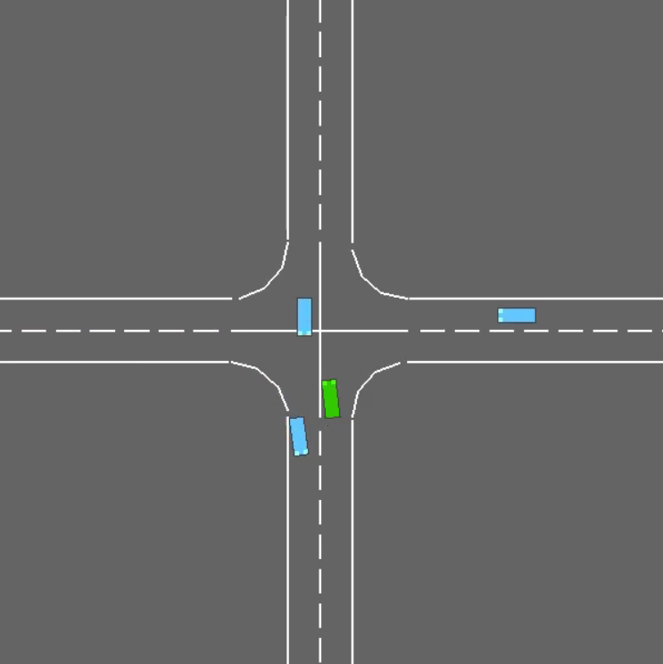

CitySimRL.
A connected 2D city driving environment for studying how reinforcement learning agents handle changing traffic conditions.

02 / 06- Institution
- Carnegie Mellon University
- Course
- 16-831: Introduction to Robot Learning
- Team
- Nilay Marathe and Mugdha Meda
- Tools
- HighwayEnv · PPO · DQN · model-based RL
Overview
We built CitySimRL by joining HighwayEnv road segments into a continuous route through a highway, merge, roundabout, and intersection. Custom lane-network adapters connect segments with different geometry, while surrounding vehicles follow Intelligent Driver Model traffic behavior.
The ego vehicle makes five high-level decisions: change lanes left or right, stay in its lane, accelerate, or decelerate. This keeps the study focused on behavioral decision-making across a changing road network.
Making the city learnable
- Stitched multiple road scenarios together using custom lane nodes and transitions.
- Added a time-to-collision penalty and more deliberate traffic spawning to encourage braking and lane changes.
- Built a segment randomizer that assembles viable road sequences, reducing reliance on one fixed route.
Comparing learning approaches
We compared PPO, DQN, a model-based reinforcement learning agent, and a random baseline. In the improved fixed environment, PPO gave the strongest and most stable performance, reaching roughly 25–27 mean episodic return by 200,000 environment steps. DQN improved but remained noisier; the model-based agent plateaued earlier at roughly 19–20.
The merge was the main bottleneck. It required a timely lane change around a fixed obstacle and other traffic. Reward shaping improved observed braking and lane changes, but reliable traversal of later segments still needed more training.
Case study visuals
Placeholder: add the learning curves, segment-distance plots, randomized-network examples, and rollout videos from the project report.